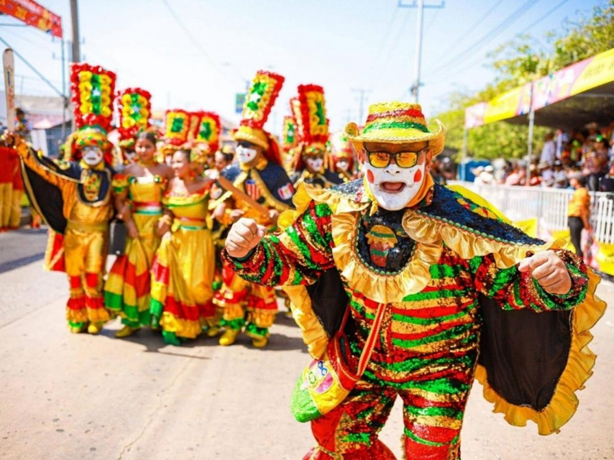

NOTICIAS LA ARENOSA
Bienvenido al espacio informativo de Barranquilla, una ciudad vibrante que se mueve al ritmo de la actualidad. Aquí encontrarás las noticias más importantes sobre lo que ocurre en la capital del Atlántico, desde acontecimientos locales y decisiones políticas hasta cultura, economía y vida cotidiana. Nuestro objetivo es mantenerte al tanto de todo lo que impacta a Barranquilla y sus habitantes, con información clara, oportuna y relevante. Cubrimos tanto los hechos que marcan el día a día como los eventos que definen el futuro de la ciudad. Mantente conectado con Barranquilla y descubre, en tiempo real, todo lo que sucede en una de las ciudades más dinámicas de Colombia.
ACTUALIDAD: Refuerzan seguridad en distintos barrios

En los últimos días, las autoridades de Barranquilla han intensificado los operativos de seguridad en diferentes sectores de la ciudad con el objetivo de reducir los índices de delincuencia. La Policía Metropolitana ha incrementado los patrullajes y controles, especialmente en zonas comerciales y residenciales. Estas acciones responden a las preocupaciones de la ciudadanía frente a robos y otros delitos. Las autoridades también han hecho un llamado a la comunidad para colaborar denunciando cualquier actividad sospechosa.
CULTURA :Sus danzas y sus eventos culturales

Barranquilla continúa destacándose por su riqueza cultural, con la realización de eventos y actividades que promueven las tradiciones del Caribe colombiano. Presentaciones de danza, música y arte se desarrollan en distintos espacios de la ciudad, fortaleciendo la identidad cultural y atrayendo tanto a locales como a turistas. Estas iniciativas no solo fomentan el entretenimiento, sino que también generan oportunidades económicas para artistas y emprendedores culturales.
DEPORTE :Junior y todo su equipo
En el ámbito deportivo, los equipos de Barranquilla siguen trabajando para destacarse en competencias nacionales. Los entrenamientos y preparaciones han sido intensificados con miras a mejorar el rendimiento en torneos importantes. La afición mantiene su apoyo, asistiendo a los estadios y siguiendo de cerca el desempeño de sus equipos, lo que demuestra la gran pasión por el deporte en la ciudad.
ECONOMIA:Construcciones y ciudad moderna

Barranquilla continúa mostrando avances en infraestructura y desarrollo urbano, con proyectos que buscan mejorar la calidad de vida de sus habitantes. Nuevas obras viales, espacios públicos y zonas comerciales están en construcción, lo que impulsa la economía local y genera empleo. Este crecimiento posiciona a la ciudad como una de las más dinámicas del país.